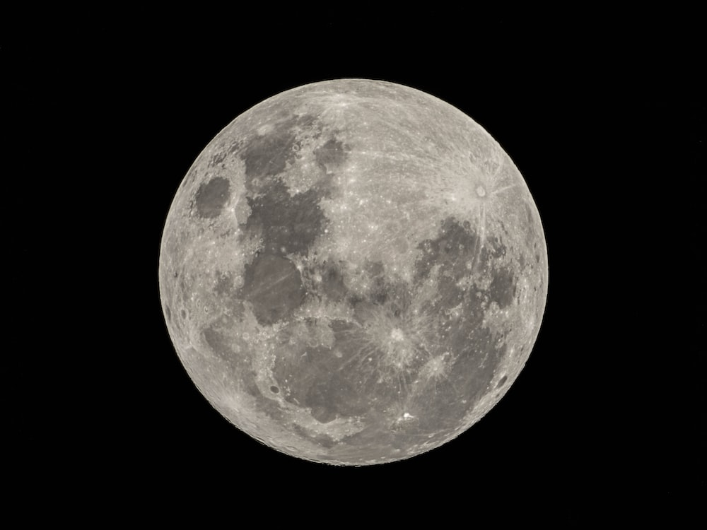
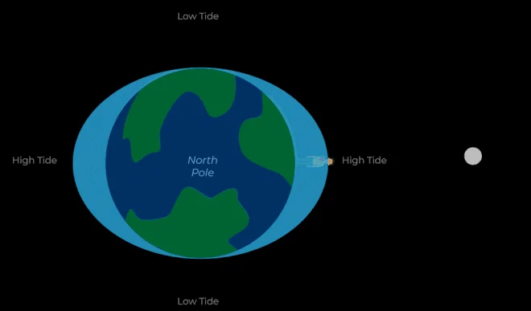

A Lua é o único satélite natural a Terra e o quinto maior do Sistema Solar. Ela se formou, há aproximadamente 4,5 bilhões de anos, do impacto de um grande corpo celeste com o planeta, e desde então realiza a sua órbita ao redor dele e também do Sol. A forma como a luz solar incide sobre a sua superfície e como a enxergamos da Terra produz as diferentes fases da Lua. Além disso, ela interage com o nosso planeta e dá origem às marés e aos eclipses
Para entender como a Lua influencia as marés, é importante conhecer os efeitos gravitacionais exercidos por nosso satélite natural — mas não só por ele, já que o Sol também afeta as marés, só que com efeito bem menor. É principalmente por causa da gravidade lunar que a água dos oceanos da Terra se acumula no lado do planeta mais próximo da Lua e naquele mais afastado dela, criando as marés altas; enquanto isso, entre elas, ocorrem as marés baixas.
No caso das marés, a parte do planeta que está voltada para nosso satélite natural é a mais afetada pelas chamadas “forças de maré”. Este efeito também ocorre nas porções sólidas do planeta, mas como a água se move mais facilmente, ela é acumulada em direção à Lua, como se tentasse “alcançá-la”. Quando isso acontece, eis que temos uma maré alta, formada pela proeminência da água acumulada em direção à Lua, já que ali a gravidade é mais forte.
